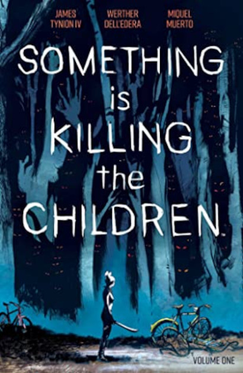

Something is Killing the Children
James Tynion IV, Werther Dell'edera, & Miquel Muerto
A mysterious person called in to exterminate a creature terrorizing a small town is not a new premise, but what makes Something is Killing the Children stand out are the characters and the artwork. The story starts off in the town of Archer’s Peak with James and three other friends having a sleepover. On a dare the boys go out to explore a nearby ravine where there is a creature rumored to be lurking. James is the only survivor of a horrific attack, the rest were brutally slaughtered. Since the incident there have been more reports of child disappearances, and everyone in town is on edge, and none of the adults in town know that there is something killing the children. Enter Erica Slaughter, a monster hunter sent in to eliminate the threat.
This is only the first volume in a series of graphic novels, and so far it is a solid introduction. We don’t know where these monsters came from nor do we know the nature of the organization that Erica Slaughter (if that’s even her real name) is working for. What we do know is that these monsters are a real threat, and at the end of the book we learn that Erica’s assignment is more critical than she thought. One of the high points of this graphic novel is the artwork which brilliantly captures the mood and atmosphere of the story and its characters. Again, the premise is nothing new, but after finishing the first volume I am certainly curious about what will happen next.
{kind=link}